무선설비기사 (2004-05-23 기출문제)
1과목: 디지털 전자회로
1. 그림의 논리회로에서 입력 A=1(high), B=0 (low)일 때 출력 X와 Y의 값은?
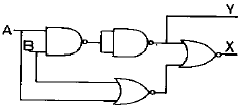
- X=1, Y=1
- X=1, Y=0
- X=0, Y=0
- X=0, Y=1
(정답률: 알수없음)

2. 카운터(counter)를 이용하여 컨베어 벨트를 통과하는 생산품의 갯수를 파악하려고 한다. 최대 500개의 생산품을 카운트하기 위한 카운터를 플립-플롭(flip-flop)을 이용하여 제작할 때 최소한 몇개의 플립-플롭이 필요한가?
- 5
- 7
- 9
- 11
(정답률: 알수없음)
3. 중심 주파수가 455[KHz]이고 대역폭이 8[KHz]가 되는 단 동조 회로를 만들려고 한다. 이때 이 회로의 Q는 약 얼마가 되는가?
- 2.9
- 5.7
- 29
- 57
(정답률: 알수없음)
4. 다음 중 모든 디지털 시스템을 설계할 수 있는 범용게이트(universal gate)는?
- AND 게이트
- OR 게이트
- NOR 게이트
- Exclusive OR 게이트
(정답률: 알수없음)
5. 4변수들에 대한 카르노도(Karnaugh map)가 그림과 같이 주어졌을 경우 이를 부울식으로 표현하면?
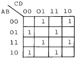
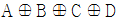
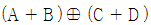
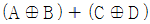
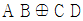
(정답률: 알수없음)
6. 다음의 회로는 Ic를 안정하게 하기 위한 회로이다. 무슨 보상방법인가?
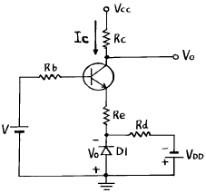
- 전류보상법
- 온도보상법
- 전압보상법
- 궤환보상법
(정답률: 알수없음)
7. ECL(Emitter Coupled Logic)회로를 TTL회로와 비교 설명한 것 중 맞는 것은?
- 에미터 폴로워이므로 안정된 동작을 한다.
- 스위칭 속도가 빠르다.
- 전력소모가 극히 적다.
- 회로가 간단하지만 공급전압이 높아야 한다.
(정답률: 알수없음)
8. 트랜지스터에서 베이스폭변조(Base width modulation)에 관한 설명으로 가장 적합한 것은?
- 트랜지스터를 제조할 때 베이스 두께를 조정해주는 것을 말한다.
- 트랜지스터의 베이스에 변조전압을 걸어서 동작시키는 것을 말한다.
- 트랜지스터의 접합에 가해지는 바이어스에 의해 베이스 두께가 변하는 것을 이용한 변조를 말한다.
- 트랜지스터의 포장에 의해 베이스가 영향을 받는 것을 말한다.
(정답률: 알수없음)
9. 이상적인 연산 증폭기의 특성(조건)으로 틀린 것은?
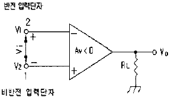
- 입력 임피던스 Ri = ∞
- 출력 임피던스 Ro = 0
- 전압이득 Av = -∞ (개방회로 전압이득)
- 온도에 의한 드리프트 현상이 있음
(정답률: 알수없음)
10. 트랜지스터 B급 증폭회로에서 실효부하저항이 RL이고 전원전압이 Vcc이면 최대출력(Pomax)은?
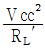
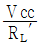
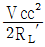
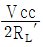
(정답률: 알수없음)
11. 출력 4[V]를 얻는데 궤환이 없을 때는 0.2[V]의 입력이 필요하고 부궤환이 있을 때는 2[V]의 입력이 필요하다고 한다. 궤환율 β 는 얼마인가?
- 0.25
- 0.30
- 0.40
- 0.45
(정답률: 알수없음)
12. 슈미트 트리거의 특징으로 옳지 않은 것은?
- 쌍안정 멀티 바이브레이터의 일종이다.
- 입력 전압의 크기가 회로의 포화, 차단 상태를 결정해 준다.
- 구형파와 삼각파 발생에 사용한다.
- 한쪽 트랜지스터의 콜렉터에서 다른쪽 트랜지스터의 베이스로만 결합용 캐퍼시터가 있다.
(정답률: 알수없음)
13. 그림의 캐패시터 입력형 정류회로의 특성을 설명한 것이다. 잘못된 것은?
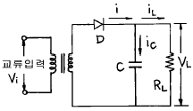
- 캐패시터의 정전용량 C가 클수록 다이오드 D에 전류가 흐르는 시간이 짧아진다.
- 캐패시터의 정전용량 C가 클수록 다이오드 D에 흐르는 전류가 감소한다.
- 캐패시터의 정전용량 C가 클수록 출력 전압의 맥동률은 적어진다.
- 다이오드에 흐르는 전류는 펄스(Pulse)파 형태이다.
(정답률: 알수없음)
14. 그림과 같은 위인 브릿지 발진회로의 발진주파수를 구하는 식은?
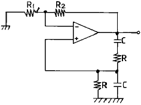
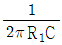
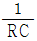
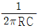
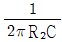
(정답률: 알수없음)
15. 부울 대수식
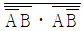
를 간단히 한 결과는?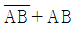
- 1
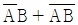
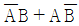
(정답률: 알수없음)
16. 디지탈 변조(digital modulation)에서 그림과 같은 변조 방식은?
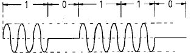
- ASK
- PCM
- PSK
- PNM
(정답률: 알수없음)
17. 다음 회로에서 트랜지스터의 콜렉터 이미터간 포화전압을 0[V]라 할 때 ① A=B=C=0 인 때와 ② A=B=C=5[V] 일 때의 출력은?
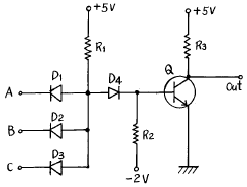
- ①0[V], ②0[V]
- ①0[V], ②5[V]
- ①5[V], ②0[V]
- ①5[V], ②5[V]
(정답률: 알수없음)
18. 대수증폭기의 동작은 무엇에 기인하는가?
- 연산증폭기의 비선형 동작
- pn 접합의 대수 특성
- pn 접합의 역방향 브레이크다운 특성
- RC 회로의 대수적인 충방전
(정답률: 알수없음)
19. 그림과 같은 가산 증폭회로의 출력 전압 VO는? (단, Rf=360㏀, R1=120㏀, R2=180㏀, R3=360㏀, V1=-6V, V2=4V, V3=2V임)
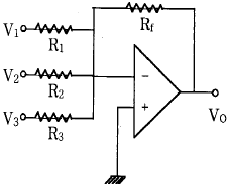
- 4〔V〕
- 8〔V〕
- 10〔V〕
- 12〔V〕
(정답률: 알수없음)
20. 다음 그림의 논리회로와 등가인 회로는?
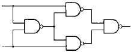
- Half adder
- Full adder
- Exclusive OR
- Exclusive NOR
(정답률: 알수없음)
2과목: 무선통신 기기
21. 단상 반파 정류기에서 출력 전력은?
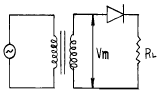
- 입력 전압의 자승에 비례
- 부하 임피던스의 자승에 비례
- 다이오드 내부저항의 자승에 비례
- 입력 전압의 자승에 반비례
(정답률: 알수없음)
22. 아래 그림은 이동전화용 단말기의 일반적 구조이다. 빈칸 A 에 알맞는 기능은?
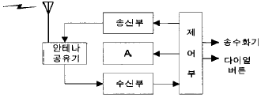
- 변,복조기(Mod/Demodulation)
- 주파수 합성기(Synthesizer)
- 전원부(Power Supply)
- IF 증폭기(IF Amplifier)
(정답률: 알수없음)
23. 레이다의 수신부의 구성과 관계 없는 것은?
- 클라이스트론(건다이오드)
- 음극선관(CRT)
- 마그네트론
- 중간주파증폭기
(정답률: 알수없음)
24. 메캐니컬 필터(Mechanical filter)에 관한 설명이다. 설명이 적절하지 않은 것은?
- 주파수의 미세 조정이 비교적 어렵다.
- 금속편의 기계적인 공진현상을 이용한다.
- 사용 주파수대가 비교적 낮다.
- LPF의 기능을 한다.
(정답률: 알수없음)
25. 급전선의 종단 개방시 입력임피이던스를 Zf, 종단 단락시 입력 임피이던스를 Zs 라고하면, 이 급전선의 특성(파동) 임피이던스는
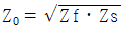
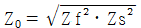
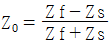
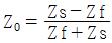
(정답률: 알수없음)
26. 다원접속방식 중 대역확산기술을 적용하기 때문에 잡음 및 에러에 강한 특징을 갖는 방식은?
- CDMA
- PA-TDMA
- FDMA
- TDMA
(정답률: 알수없음)
27. 이득 대역적(Gain Bandwidth Product)이 갖는 의미로서 가장 적절한 것은?
- 증폭기의 증폭 성능을 나타내며 어느정도 넓은 대역에 걸쳐 안정된 증폭을 수행하는가를 의미
- 증폭기의 증폭성능을 나타내며 다음 단과 어느정도 양호한 증폭이 이루어지는가를 의미
- 발진기의 발진 성능을 나타내며 어느정도 넓은 대역에 걸쳐 안정된 발진이 가능한가를 의미
- 발진기의 발진 성능을 나타내며 어느정도 양호한 증폭특성으로 발진을 수행하는가를 의미
(정답률: 알수없음)
28. 무선 송신기에서 사용되는 완충 증폭기에 대한 설명이 맞지 않는 것은?
- 증폭방식은 주로 A급이다.
- 발진회로와 부하간을 격리하기 위하여 사용되는 증폭 기다.
- 발진기의 안정도를 높이기 위하여 사용된다.
- 주파수 대역폭을 높이기 위하여 사용된다.
(정답률: 알수없음)
29. FM변조 방식중 간접 FM변조 방식이 아닌 것은?
- 이상법에 의한 변조 방법
- 벡터 합성법에 의한 변조방법
- 반사형 크라이스트론을 이용한 변조방법
- 펄스 위치변조를 이용한 변조방법
(정답률: 알수없음)
30. 이동통신 시스템에서 캐리어주파수가 850MHz, 차량속도가 80km/h라 할때 최대 Doppler Spread는 얼마인가?
- 63Hz
- 65Hz
- 67Hz
- 69Hz
(정답률: 알수없음)
31. 수신기의 종합특성중 희망신호 이외의 신호를 어느정도 분리할 수 있느냐의 분리능력을 나타내는 것은?
- 감도 (Sensitivity)
- 선택도 (Selectivity)
- 충실도 (Fidelity)
- 안정도 (Stability)
(정답률: 알수없음)
32. 점유주파수 대역폭을 바르게 설명한 것은?
- 송신기에서 방출되는 전체 에너지의 99[%]를 차지하는 대역폭
- 송신기에서 방출되는 전체 에너지의 100[%]를 차지하는 대역폭
- 송신기에서 방출되는 전체 에너지의 0.5[%]를 차지하는 대역폭
- 송신기에서 방출되는 전체 에너지의 50[%]를 차지하는 대역폭
(정답률: 알수없음)
33. 그림과 같은 이상형 CR발진기에서 C=0.⑤[㎌], R=1[㏀] 일때 발진주파수는 얼마인가?
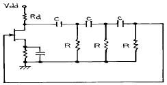
- 약 130[㎐]
- 약 318.5[㎐]
- 약 1300[㎐]
- 약 3185[㎐]
(정답률: 알수없음)
34. 진폭변조 송신기의 출력이 100(%)변조시에 100[W]이다. 50[%]변조시의 출력은 약 몇[W]인가?
- 66.7[W]
- 75[W]
- 100[W]
- 112.5[W]
(정답률: 알수없음)
35. FM 수신기에서 스켈치 회로가 사용되는 이유는?
- 수신기 감도를 향상시키기 위해서
- 선택도를 높이기 위해서
- 자동 주파수를 조정하기 위해서
- 수신 신호가 없을 때 내부 잡음을 억제하기 위해서
(정답률: 알수없음)
36. Micro파 통신의 특징을 설명한 것 중 틀린 것은?
- 안테나의 이득을 크게 할 수 있다.
- 안정한 전파전파 특성을 나타낸다.
- 광대역성이 가능하다.
- 외부의 잡음에 매우 약하다.
(정답률: 알수없음)
37. 레이다에서 발사된 펄스 전파가 20[㎲]후에 목표물에 반사되어 되돌아 왔다. 목표물까지의 거리는 얼마인가?
- 1.5[㎞]
- 3[㎞]
- 4.5[㎞]
- 6[㎞]
(정답률: 알수없음)
38. 스펙트럼 분석기(spectrum analyzer)의 용도로서 맞지 않는 것은?
- 펄스폭 및 반복율 측정
- 변조의 직선성 측정
- FM 편차 측정
- RF 간섭시험
(정답률: 알수없음)
39. 납축 전지의 충전 화학반응은?
- PbSO4 + 2H2O + PbSO4 → PbO2 + Pb + 2H2SO4
- PbSO4 + Pb + 2H2SO4 → PbSO4 + 2H2O + PbSO4
- PbSO4 + Pb + PbSO4 → PbSO4 + 2H2O + 2H2SO4
- PbSO4 + 2H2O + PbSO4 → PbSO4 + Pb + 2PbSO4
(정답률: 알수없음)
40. FM 송신기의 반송파와 최대주파수 편이를 측정하였더니 각각 80MHz 와 50KHz 이었다. 이 송신기에 10KHz 의 신호파로 변조한다면 점유 주파수 대역폭(B)과 변조지수(mf)는 얼마인가?
- B=110[KHz], mf =5
- B=110[KHz], mf =6
- B=120[KHz], mf =5
- B=120[KHz], mf =6
(정답률: 알수없음)
3과목: 안테나 공학
41. 주파수 10[MHz]에 대한 전기적 미소다이폴의 복사전계가 그 정전계보다 이론상 커지는 것은 송신 안테나에서 대략 얼마만큼 떨어진 곳에서 부터인가?
- 5[m]
- 10[m]
- 15[m]
- 30[m]
(정답률: 알수없음)
42. 대수주기형 안테나(Log periodic antenna)에 대한 기술로서 옳지 않는 것은?
- 안테나의 크기와 모양이 비례적으로 커지는 여러개의 안테나 소자로 되어 있다.
- 주파수의 대수값이 일정한 값만큼씩 달라지는 주파수 때마다 동일한 복사특성을 나타낸다.
- 무지향성의 안테나로 이득이 매우 높다.
- 매우 넓은 주파수 대역을 갖는다.
(정답률: 알수없음)
43. 다음 중 차단파장이 가장 긴 모드는?
- TE01 모드
- TE11 모드
- TM11 모드
- TM01 모드
(정답률: 알수없음)
44. 특성 임피던스 300[Ω]인 무손실 선로가 있다. 75[Ω]의 부하를 접속하였을때 선로의 정재파비는 얼마인가?
- 1
- 2
- 3
- 4
(정답률: 알수없음)
45. VHF대에서 송수신 공중선의 높이가 다같이 1[m]라면 직접파에 의한 전파 가시거리는?
- 약7.14[㎞]
- 약8.22[㎞]
- 약10.15[㎞]
- 약12.4[㎞]
(정답률: 알수없음)
46. 5[MHz]용 λ /4의 수직접지안테나에 입력전압의 최대값이 12[V]이었다면, 급전점으로 부터 5[m]인 지점에서의 전압은 얼마인가?
- 6[V]
- 10[V]
- 12[V]
- 18[V]
(정답률: 알수없음)
47. 루우프 안테나를 방향 탐지용으로 사용하려고 할때는 수직 안테나의 출력과 루우프 안테나의 출력을 합산한 것을 동시에 받아들이고 있는 이유로서 가장 타당한 것은?
- 측정 정밀도를 향상시키기 위한 것이다.
- 도래 방향과 수직 안테나에 의한 실효고를 높이기 위함이다.
- 루우프 안테나의 실효고는 수직부보다 길어야 하므로 이를 수직부와 비교하기 위함이다.
- 전파의 도래 방향 중 루우프 안테나만으로서는 전후 방향의 식별이 안되기 때문이다.
(정답률: 알수없음)
48. 장중파용 안테나의 특징 중 옳지 못한 것은?
- 설치가 저렴하고 광대역성이다.
- 안테나의 이득이 낮다.
- 고유파장의 안테나를 얻기 어렵다.
- 주로 수직편파에 의한 지표파를 이용하므로 접지가 필요하다.
(정답률: 알수없음)
49. 다음 중 초단파 통신의 특징이 아닌 것은? (단, 중파 통신과 비교)
- 라디오덕트에 의한 원거리 전파가 될 수 있다.
- 광대역 전송이 가능하다.
- 기생 진동의 발생이 적다.
- 가시거리 내에서 전파 손실이 크다.
(정답률: 알수없음)
50. 초단파가 가시거리를 넘어서 이례적으로 멀리 전파하는 일이 있는데 그 원인이 아닌 것은?
- 초굴절 또는 라디오 닥트에 의한 전파
- 대류권 산란에 의한 전파
- 산악회절파에 의한 전파
- F 층의 반사에 의한 전파
(정답률: 알수없음)
51. 아래 안테나 중에서 직선 편파나 원형 편파가 가능하며 진행파 안테나로 되는 것은?
- 야기(Yagi) 안테나
- 나선(Helical) 안테나
- 루 - 프(Loop) 안테나
- 폴디드 다이폴(Folded dipole) 안테나
(정답률: 알수없음)
52. 다음의 동조급전 방식에 대한 설명 중 옳은 것은?
- 송신기와 안테나 사이의 거리가 멀수록 많이 사용한다.
- 전압급전일 때 직렬공진의 급전회로를 사용하려면 급전선의 길이를 λ/4의 기수배로 사용한다.
- 전류급전일 때 병렬공진의 급전회로를 사용하려면 급전선의 길이를 λ/4의 우수배로 사용한다.
- 임피던스 정합회로를 사용하므로 진행파가 급전된다.
(정답률: 알수없음)
53. 개구면 안테나에 해당되지 않는 것은?
- 렌즈 안테나
- 곡면 반사경 안테나
- 슬롯(slot) 안테나
- 유전체봉 안테나
(정답률: 알수없음)
54. 다음 중 집파다이폴(collector)을 여러 개 설치하여 전파를 모으고 그 기전력을 급전선에 결합시키는 원리를 사용한 단파대의 수신용 안테나는?
- 어골형 안테나
- 롬빅(rhombic) 안테나
- 고조파 안테나
- 벤트(bent) 안테나
(정답률: 알수없음)
55. 다음은 지표파에 대한 설명이다. 잘못된 것은?
- 전파는 평지에서 가장 잘 전파한다.
- 유전율이 작을수록 감쇠가 적어진다.
- 수평편파는 큰 감쇠를 받는다.
- 장·중파대에서 감쇠가 적다.
(정답률: 알수없음)
56. 도파관창의 용도로서 맞지 않은 것은?
- 임피던스 정합용 소자로서 사용한다.
- 도파관용 필터로 사용한다.
- 공동공진기에서 출력을 얻는데 사용한다.
- 도파관의 여진용으로 사용한다.
(정답률: 알수없음)
57. 안테나의 지향성을 나타내는 식은? (여기서 Pav : 평균 복사전력 밀도, Pmax : 최대 복사전력 밀도, Wr : 총 복사전력)
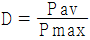
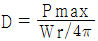
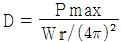
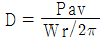
(정답률: 알수없음)
58. 델린저(Dellinger)현상의 특징이 아닌 것은?
- 야간에만 나타난다.
- 태양면의 폭발에 기인한다.
- 단파통신에 주로 영향을 준다.
- 주파수를 높게 선정하여 극복한다.
(정답률: 알수없음)
59. λ /4수직 접지 안테나의 상대 이득은 같은 전력의 반파장 안테나의 상대이득에 비하여 몇배가 되는가?
- 2배
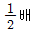
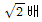
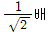
(정답률: 알수없음)
60. 임피던스 정합회로를 쓰지 않고도 평행2선식 급전선과 직접 연결 가능한 안테나는?
- 반파장 안테나
- 폴디드 안테나
- 빔안테나
- 야기 안테나
(정답률: 알수없음)
4과목: 무선통신 시스템
61. 무선통신시스템 우리나라 통신위성인 무궁화 1호에 관한 설명으로 틀린것은?
- 방송과 통신겸용의 하이브리드 위성이다.
- 위성으로 부터의 DBS 전파송신빔의 중심은 서울상공이 된다.
- 사용주파수 대역은 Ku대역이다.
- 위성은 정지궤도로써 적도상에 위치한다.
(정답률: 알수없음)
62. 대역폭이 6[㎑]인 슈퍼헤테로다인 수신기가 470[㎑]를 수신하고 있을 때 영상 혼신 주파수는? (단, 중간 주파수는 400[㎑]임)
- 870[㎑]
- 1,110[㎑]
- 1,270[㎑]
- 1,750[㎑]
(정답률: 알수없음)
63. 다음 중 위성 통신의 장점이 아닌 것은?
- 회선 구성의 유연성
- 내재해성
- 광역성, 다원 접속성
- 근거리통신에 대한 경제성
(정답률: 알수없음)
64. 이동통신 시스템에서 이동전화교환국에 관한 설명으로 적합하지 않은 것은?
- 일반전화망과 이동통신망을 접속하여 주는 업무를 수행한다.
- 교환국에서 운용하고 있는 이동전화교환기는 자동화와 축적프로그램제어(SPC) 방식으로 되어있다.
- 통화절체기능(Hand-off), 위치검출 및 등록기능이 있어야 한다.
- 송수신기, 안테나, 제어부분 등으로 구성되어 있다.
(정답률: 알수없음)
65. INTELSAT 지구국의 설비에 대한 양호지수(G/T) 값에 따라 표준등급이 결정된다. 다음의 G/T에 대한 설명 중 맞는 것은?
- G는 안테나 직경(m)이다.
- T는 안테나 무게(ton)이다.
- G/T는 증폭능력을 평가한다.
- G/T는 안테나의 성능을 평가한다.
(정답률: 알수없음)
66. 셀룰라 이동전화 시스템에서 셀룰라 방식의 특징이 아닌것은?
- 스펙트럼의 효율적 이용
- 주파수 재사용의 효율성
- 통화량 밀집에 대한 적응성
- 각 기지국 서비스 영역의 광역화
(정답률: 알수없음)
67. 셀룰라 통신에서 널리 사용되는 로밍(ROAMING)에 대한 설명중 가장 알맞는 것은?
- 이동중 RF접속이 한 셀기지국으로 부터 다른 셀기지국으로 변경되는 것을 말한다.
- 외국인이 한국을 방문하여 셀룰라 전화를 임대하여 사용하는 서비스다.
- 사용자가 가입된 사업권 영역을 벗어나는 지역에서 이동전화를 사용하고자 할때 타 사업권 영역에서 서비스를 받도록 하는 방식이다.
- 인공위성을 이용한 세계 전체의 이동전화 서비스를 말한다.
(정답률: 알수없음)
68. 다음 중 무선통신에 이용되는 디지털 변조방식이라고 볼 수 없는 것은?
- DSK
- ASK
- PSK
- FSK
(정답률: 알수없음)
69. 통신위성체의 통신부는 안테나계와 중계기계로 구성된다. 직접중계방식의 위성중계기는 주로 어떤 부분으로 구성되는가?
- 수신부, 신호증폭부, 주파수변환부, 송신부
- 수신부, 발진부, 변조부, 송신부
- 수신부, 변조부, 증폭부, 송신부
- 수신부, 검파부, 증폭재생부, 송신부
(정답률: 알수없음)
70. 디지털 변조형식에서 M = 32상(Phase) 변조시 동일 조건에서 신호 에러 확률이 가장 양호한 것은?
- FSK 변조
- PSK 변조
- ASK 변조
- QAM 변조
(정답률: 알수없음)
71. 무선수신기의 특성중 변조내용을 수신기의 출력측에서 어느정도 재현할 수 있는가의 능력을 나타내는 것은?
- 감도(Sensitivity)
- 선택도(Selectivity)
- 충실도(Fidelity)
- 안정도(Stability)
(정답률: 알수없음)
72. 우리나라의 Cellular 통신(차량 및 휴대용)과 관계 없는 것은?
- CDMA방식
- 대역확산통신방식
- TDMA방식
- PN코드
(정답률: 알수없음)
73. 다음 중 INMARSAT 위성에 대한 설명으로 맞는 것은?
- 국제 공중 통신 역무를 주목표로 한다.
- 해상에서의 조난 및 인명의 안전에 관한 통신을 목적으로 한다.
- 지구관측을 통해서 지상의 자원 조사, 감시 및 탐사 등을 목적으로 한다.
- 일기예보를 정확히 하기 위한 기상관측이 목적이다.
(정답률: 알수없음)
74. 다음 중 UHF대의 주파수 대역폭은?
- 3 ~ 30 MHz
- 30 ~ 300MHz
- 300 ~ 3000MHz
- 300 ~ 30GHz
(정답률: 알수없음)
75. CDMA 방식에서 역방향 채널인 것은?
- 액세스채널
- 동기채널
- pilot채널
- 호출채널
(정답률: 알수없음)
76. 마이크로통신 시스템의 중계방식에서 수신한 마이크로파를 중간주파수로 변환하고 다시 검파하여 영상 또는 음성으로 변환한 후 증폭하여 다시 송신기에서 마이크로파로 변조하여 송신하는 방식은?
- 헤테로다인 중계방식
- 검파 중계방식
- 직접 중계방식
- 중간주파수 중계방식
(정답률: 알수없음)
77. 송신기에서 발사되는 고조파의 방사를 적게 하기 위해서는 어떤 방법을 강구해야 하는가?
- 송신기 종단 동조회로의 Q를 될 수 있는 대로 낮게 한다.
- 송신기 종단과 공중선 사이에 결합회로를 설치한다.
- 송신기 종단과 공중선 사이에 저조파 여파기를 삽입 한다.
- 저조파에 대한 트랩을 급전선에 설치한다.
(정답률: 알수없음)
78. 이득이 8[dB]이고, 잡음지수가 8[dB]인 증폭기 후단에 잡음지수가 9[dB]인 증폭기가 연결되어 있다면 종합잡음지수는 몇 [dB]인가?
- 8.5
- 9.0
- 9.5
- 10.0
(정답률: 알수없음)
79. 마이크로파 통신에서 주파수 체배용으로 사용되는 다이오드는?
- 터널 다이오드(Tunnel Diode)
- 실리콘 접합다이오드(Silicon Junction Diode)
- 바랙터 다이오드(Varactor Diode)
- 실리콘 포인트 컨택 다이오드(Silicon Point Contact Diode)
(정답률: 알수없음)
80. 잡음의 성질에 따른 분류 중에서 종류가 다른 것은?
- 열잡음
- 동기성 잡음
- 우주 잡음
- 충격성 잡음
(정답률: 알수없음)
5과목: 전자계산기 일반 및 무선설비기준
81. 제 5과목: 전자계산기일반 및 무선설비기준 무변조상태에서 송신장치로부터 송신공중선계의 급전선에 공급되는 전력으로서 무선주파수의 1주기동안에 걸쳐 평균한 것은?
- 평균전력
- 첨두포락선전력
- 반송파전력
- 규격전력
(정답률: 알수없음)
82. 중앙처리 장치를 하나의 칩으로 집적해서 만들고 메모리와 입출력 장치를 접속시킨 것은?
- 전원회로
- 마이크로컴퓨터
- 터미널
- 데이터 시스템
(정답률: 알수없음)
83. 점유주파수대폭의 허용치가 260㎑인 초단파 방송국의 무선설비의 전파형식이 아닌 것은?
- F7W
- F8E
- F9W
- F9E
(정답률: 알수없음)
84. 전자파적합등록표장의 형태와 가장 가까운 것은?
- 사각형
- 삼각형
- 원형
- 타원형
(정답률: 알수없음)
85. 다음 중 무선설비의 위탁운용 및 공동사용할 수 있는 무선설비에 해당하지 않는 것은?
- 송신설비
- 수신설비
- 무선국의 공중선
- 시설자가 동일한 무선국의 무선설비
(정답률: 알수없음)
86. 언팩 10진법 형식에 의한 값이 "F1F4F7F5"이다. 이 값을 16진수로 변환하면?
- 5C3
- 5D2
- 4C3
- 4D2
(정답률: 알수없음)
87. C언어의 특징을 잘못 설명한 것은?
- C언어 자체에는 입출력 기능이 없다.
- C는 포인터와 주소를 계산할 수 있다.
- 연산자가 풍부하지 못하다.
- 데이터에는 반드시 형(type) 선언을 해야 한다.
(정답률: 알수없음)
88. 8진수 277.24를 10진수로 변환하면 어느 것인가?
- 191.3125
- 191.25
- 292.3125
- 292.0625
(정답률: 알수없음)
89. 전파형식 중 진폭변조 전화의 단측파대 억압반송파를 바르게 표시한 것은?
- A3E
- R3E
- J3E
- B3E
(정답률: 알수없음)
90. 필요주파수대폭의 표시중 25.5Hz를 옳게 나타낸 것은?
- H255
- 2H55
- 25H5
- 25Hø
(정답률: 알수없음)
91. 다음 중 공중선계에서 접지시설을 생략할 수 있는 것은?
- 표준방송국의 송신기
- 육상이동국의 휴대용 송신기
- 선박국의 중단파 송신기
- 아마추어국의 단파 송신기
(정답률: 알수없음)
92. 다음 주소 지정 방식 중 기억 장치를 가장 많이 엑세스(access)해야 하는 방식은?
- 직접 주소 지정 방식
- 상대 주소 지정 방식
- 간접 주소 지정 방식
- 인덱스 주소 지정 방식?
(정답률: 알수없음)
93. 무선국의 허가 신청에 관한 설명중 맞는 것은?
- 방송국의 허가 신청은 방송별로 하거나 주파수 별로 할 수 있다.
- 하나의 주파수로 다수의 방송을 할 경우 별도의 허가가 필요 없다.
- 이동하는 무선국(개인이 개설하는 무선국)은 단일 송신장치로만 허가를 받아야 한다.
- 통신망이나 무선국 설치 장소는 허가사항이 아니다.
(정답률: 알수없음)
94. 캐시 메모리의 적중률은 프로그램과 데이터의 지역성에 크게 의존하는데, 지역성의 특성이 아닌 것은?
- 시간적 지역성
- 공간적 지역성
- 순차적 지역성
- 비순차적 지역성
(정답률: 알수없음)
95. 전파연구소장은 정보통신기기인증신청서를 접수한 날부터 몇 일 이내에 처리하여야 하는가?
- 1일
- 3일
- 5일
- 7일
(정답률: 알수없음)
96. 다음 보기와 같이 3가지의 연산자가 있다. 연산순서가 빠른 것부터 순서적으로 옳게 나열한 것은?
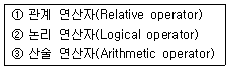
- ① → ② → ③
- ① → ③ → ②
- ③ → ② → ①
- ③ → ① → ②
(정답률: 알수없음)
97. 다음 중 언어를 번역하는 번역기가 아닌 것은?
- Assembler
- Interpreter
- Compiler
- Linkage Editor
(정답률: 알수없음)
98. 중앙 연산 처리 장치의 하드웨어(hardwere)적 요소가 아닌 것은?
- IR(Instruction Register)
- MAR(Memory Address Register)
- LAN(Local Area Network)
- PC(Program Counter)
(정답률: 알수없음)
99. 방송국 (초단파 방송, TV 방송은 제외) 송신설비의 공중선 전력의 허용편차 하한치는?
- 5[%]
- 10[%]
- 20[%]
- 60[%]
(정답률: 알수없음)
100. 산술 및 논리연산의 결과를 일시 보존하는 레지스터는?
- Accumulator
- Storage 레지스터
- Arithmetic 레지스터
- Instruction 레지스터
(정답률: 알수없음)